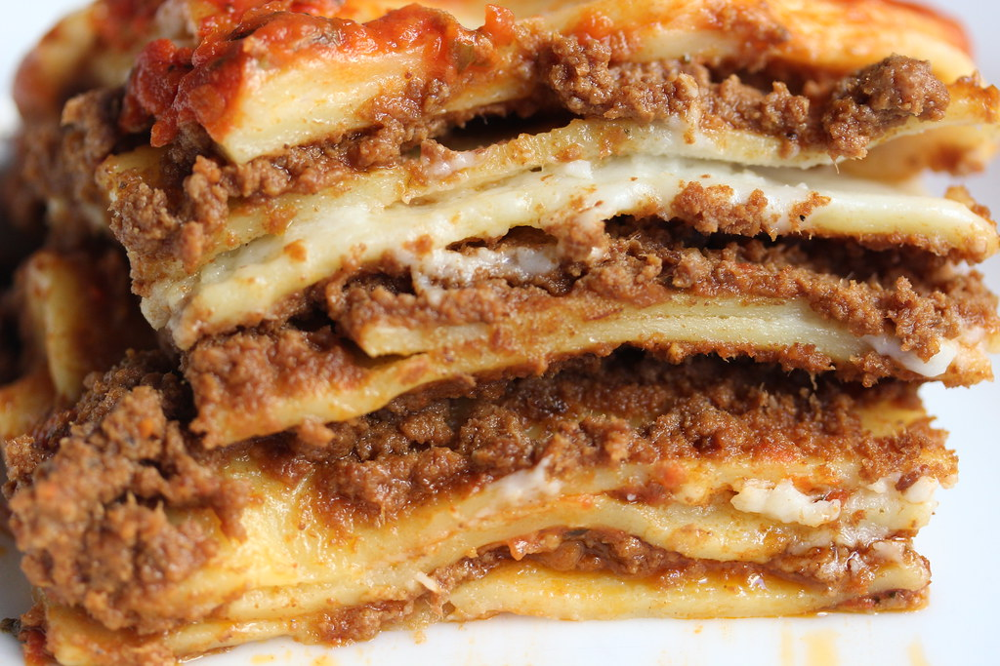

Lasagne

Description
Lasagna is a hearty pasta dish with multiple layers. It can be made with vegatables or meat,
but if you make it according to the recipe below, you will be disappointed!
Ingredients
- lasanga pasta
- tomato sauce
- fresh basil
- garlic powder
- oregano
Steps
- Cook Pasta
- Boil water
- Add pasta to water
- Let pasta cook for 11 minutes
- Strain pasta and let cool
- Make Sauce
- Bring tomato sauce to near boil
- Reduce heat to simmer
- Add basil, garlic powder, and oregano
- Let simmer for 7 minutes, stirring regularly
Home